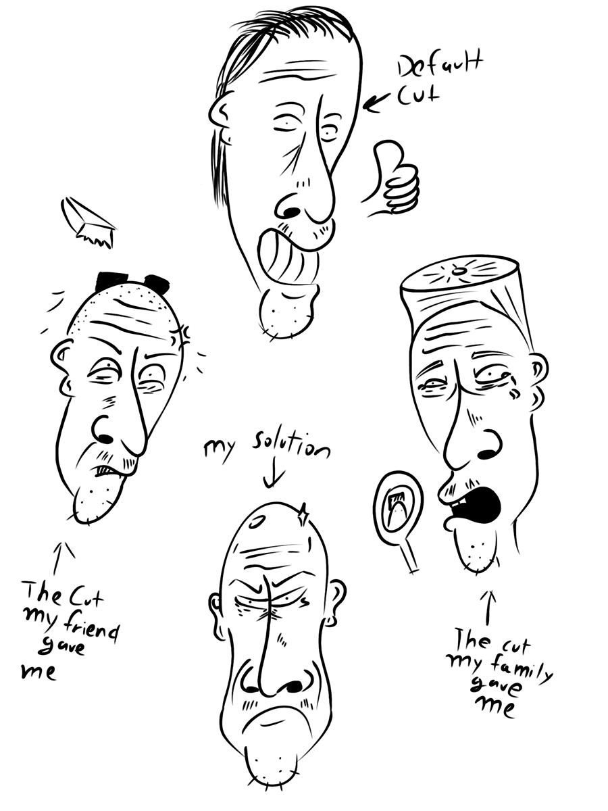

My family and friends were the most affordable barbers in the world, and it showed. I was nicknamed "Megamind," and trust me, it didn't help when I pulled up with my hairline pushed back. I looked so bald that my foreign language teacher asked me, "Is your head cold?" DAMN, YOU TELL ME—IT'S THE MIDST OF WINTER, AND I LOOK LIKE LEX LUTHOR. To hell with that random Jewish kid on the bus who shouted, "Your hairline isn't even on top of your head." #FreePalestine.
- Fried Chicken Connoisseur.